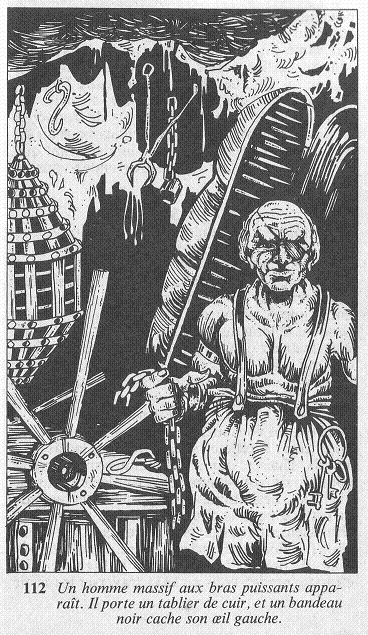

La porte s'ouvre et vous vous apprêtez à pénétrer dans la pièce, mais ce que vous y voyez vous fait vous arrêter net. Vous êtes au seuil d'une chambre de torture. Dans un coin est posé une espèce de sarcophage dont l'intérieur est garni de pointes acérées. Au centre de la chambre se trouve un chevalet. Et, pendant du plafond, à gauche de la pièce, vous pouvez voir deux cages : la première est juste assez grande pour qu'un homme puisse s'y tenir accroupi, alors que, s'il est possible de se tenir debout dans la seconde, il est en revanche totalement impossible d'y faire le moindre mouvement. Cette découverte vous glace d'horreur. Soudain, deux mains saisissent vos poignets, vous tirent et vous projettent au milieu de la pièce ! Surgi de derrière la porte, apparaît un homme massif aux bras puissants. Il porte un tablier de cuir, et un bandeau noir cache son œil gauche.

« Eh bien ! s'exclame-t-il, qui s'est introduit dans notre Manoir ? Allez, parlez... Avezvous perdu votre langue ? » Qu'allez-vous lui répondre ? Allez-vous lui dire que vous cherchez à sortir du Manoir et que vous seriez heureux de trouver le plus court chemin pour cela , ou préférez-vous lui mentir en lui déclarant que vous êtes un des amis du Maître ?